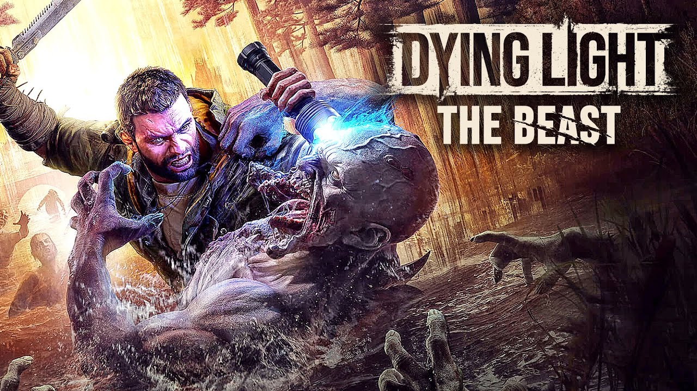
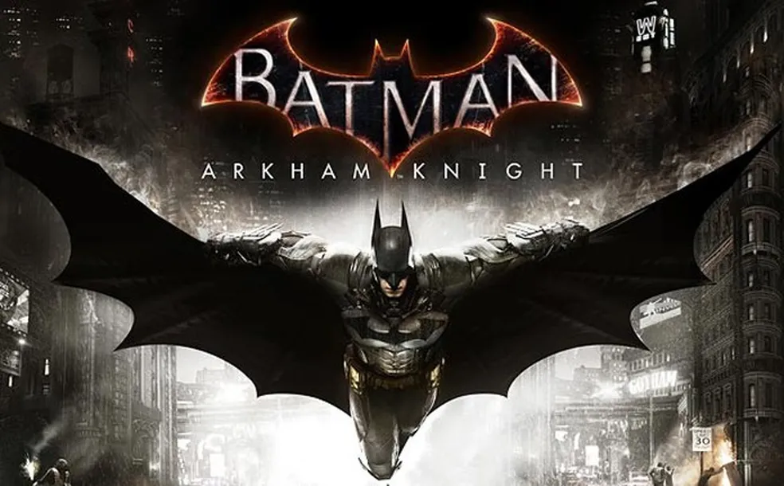

-

Red Dead Redemption 2
Ação Faroeste Mais Jogados
Mundo aberto da Rockstar Games, ambientado nos EUA em 1899, que segue o fora-da-lei Arthur Morgan.
-

CyberPunk2077
Ação Mundo aberto Aclamados pela crítica
RPG de ação e aventura em mundo aberto da CD Projekt Red, ambientado na distópica e futurista Night City.
-

Dying Light: The Beast
Terror Parkour Primeira Pessoa
Aventura standalone de terror e parkour em primeira pessoa, focada no protagonista Kyle Crane.
-

Batman Arkham Knight
Ação Furtividade Mais Jogados
Capítulo final da trilogia Arkham da Rocksteady, onde o Espantalho une supervilões para dominar Gotham.
-

Grand Theft Auto V
Ação Mundo Aberto Mais Jogados
Jogo de ação e aventura em mundo aberto da Rockstar Games, ambientado na fictícia Los Santos e arredores.
-

Tomb Raider (GAME OF THE YEAR EDITION)
Ação Aventura História
Versão completa do jogo de 2013, que reimagina a origem de Lara Croft.